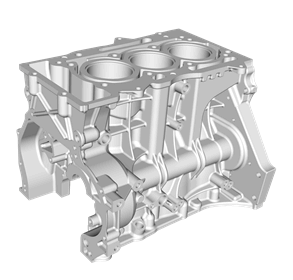
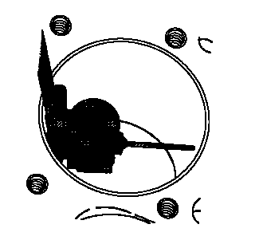
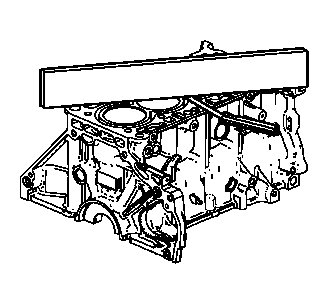

发动机气缸体的清洁与检查
专用工具
- • EN-8087气缸规
- • EN-28410衬垫拆卸工具
清洁程序
- 1.确保正确使用室温硬化密封胶 (RTV)。室温硬化密封胶（RTV）和厌氧密封胶的使用
- 2.用EN-28410拆卸工具除去任何旧的螺纹密封胶、衬垫材料或密封胶。
- 3.使用溶剂清洁以下所有区域：
- • 密封面
- • 冷却液通道
- • 机油油道
- • 轴承轴颈
- 4.使用溶剂清洁所有螺纹和通孔。
-
5.使用压缩空气干燥发动机气缸体。
目视检查
-

1.检查曲轴轴承轴颈是否损坏或存在轴承打滑现象。曲轴轴承轴颈不可维修，如果曲轴轴承轴颈损坏，必须更换气缸体总成。
- 2.检查发动机气缸体的初级凸轮轴传动链条张紧器安装表面上是否有可能对新的初级凸轮轴传动链条张紧器衬垫的密封造成影响的毛刺或任何缺陷。
- 3.检查所有的密封面和配合面是否损坏，必要时修理或更换气缸体总成。
- 4.检查所有螺纹孔和穿通孔是否损坏或有过多碎屑。
- 5.检查螺栓是否损坏，如果损坏必须用新的螺栓更换。
- 6.检查气缸壁是否有裂纹或损坏。气缸套不能单独维修，如果气缸损坏则必须更换气缸体总成。
- 7.检查发动机气缸体是否有裂纹。切勿修理任何裂纹。如果发现裂纹，必须更换气缸体总成。
测量气缸孔直径
-

1.检查气缸情况。可在气缸壁上看到某些发光垂直标记。在这些区域，检查珩磨标记是否仍在此标记区域内可见。如果可见，则气缸表面未受影响，且发动机气缸体可使用。
- 2.使用EN-8087量表测量距离气缸体顶面 48 毫米（1.890 英寸）处的止推面及非止推面气缸孔直径。
- 3.将测量结果与发动机机械系统规格（LI6）、发动机机械系统规格作比较。如果气缸直径超过规格，把气缸体加大尺寸 0.25 毫米（0.010 英寸）。仅有一种尺寸的超大活塞和环可用于维修。
测量气缸孔锥度
- 1.在气缸体顶面以下 10 毫米（0.397 英寸处沿着垂直于曲轴中心线的止推面测量气缸孔，并记录测量值。
- 2.在气缸体顶面以下 100 毫米（3.976 英寸处沿着垂直于曲轴中心线的止推面测量气缸孔，并记录测量值。
- 3.计算2 个测量值的差值。结果就是气缸锥度。
- 4.将测量结果与发动机机械系统规格（LI6）、发动机机械系统规格作比较。如果气缸超过规格，把气缸体加大尺寸 0.25 毫米（0.010 英寸）。仅有一种尺寸的超大活塞和环可用于维修。
测量气缸孔圆度
- 1.测量气缸体顶面以下 10 毫米（0.397 英寸）处的止推和非止推面气缸直径。记录测量值。
- 2.计算2 个测量值的差值。计算结果就是气缸上端的圆度。
- 3.测量气缸体顶面以下 100 毫米（3.976 英寸）处的止推和非止推面气缸直径。记录测量值。
- 4.计算2 个测量值的差值。计算结果就是气缸下端的圆度。
- 5.将测量结果与发动机机械系统规格（LI6）、发动机机械系统规格作比较。如果气缸超过规格，把气缸体加大尺寸 0.25 毫米（0.010 英寸）。仅有一种尺寸的超大活塞和环可用于维修。
气缸盖顶面不平度检查
-

1.确保发动机气缸体顶面干净且无衬垫材料。
- 2.检查表面是否有任何可能对气缸盖衬垫的密封性能造成影响的缺陷或划痕。
- 3.将一把直尺对角放置在气缸体顶面。
- 4.用测隙规沿直尺在4个点测量直尺和气缸体顶面之间的间隙。
- 5.如果翘曲小于 0.05 毫米（0.002 英寸），则气缸体顶面不需要表面修整。
- 6.如果翘曲在 0.05-0.20 毫米（0.002-0.008 英寸）之间，或出现可能妨碍气缸盖衬垫正常密封的缺陷或擦伤，气缸体顶面需要表面修整。
- 7.如果需要表面修整，则最多可磨削 0.25 毫米（0.010 英寸）。
- 8.如果气缸体顶面需要的磨削量超过 0.25 毫米（0.010 英寸），则必须更换气缸体。